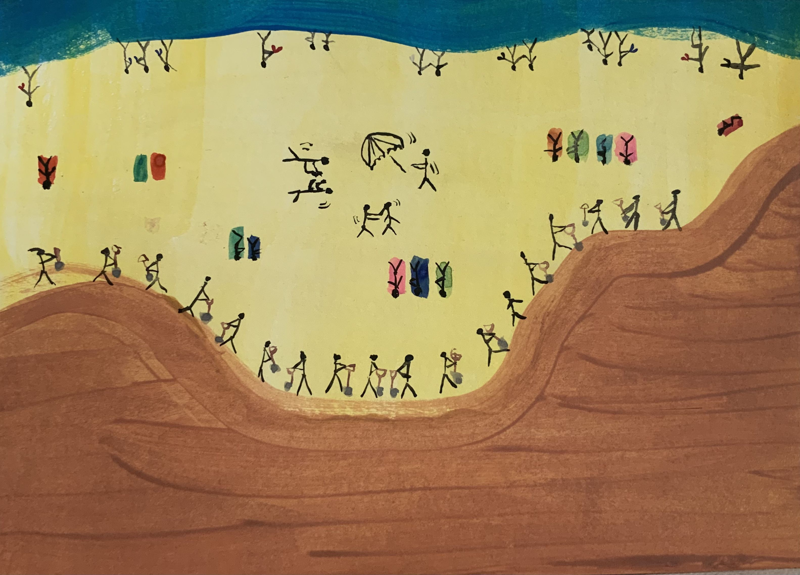

Amok’s Beach
Waterverf op papier


Een product van Fretto’s verdere sofisticatie; dit werk gebaart naar enkele hedendaagse maatschappelijke vraagstukken. Zo geeft de kunstenares kritiek op twee verschillende zaken. Het eerste onderwerp is gebaseerd op Fretto’s ervaringen als vrouw in de steeds patriarchalere en meer man-gedomineerde ruimte die ze als kunstenaar heeft ervaren. Zo onderzoekt ze waarom mannen en jongens altijd een put willen graven als ze de zee bezoeken. Zijn ze melancholisch naar de loopgraven uit de Wereldoorlogen? Bereiden zij zich voor voor de volgende oorlog? Of wordt hun gedrag gestuwd door een intrinsiek mannelijk instinct, dat naar boven komt wanneer ze het handvat van een schop aanraken?
Daarnaast verwijst de titel naar het centrum van het werk. Hier geeft Livia kritiek op de maatschappelijke problemen in onze samenleving die komen kijken bij de opwarming van de aarde. Bij stijgende temperaturen zoeken mensen naar afkoeling. “Moest er geen opwarming van de aarde zijn, zouden er niet zo veel mensen zo nodig naar de Belgische kust afzakken. Dan zou er genoeg plaats zijn voor de zee-elite en blijven de stedelingen in hun stad.”